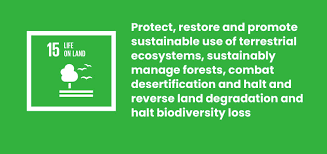

Life on Land
Goal 15 is about conserving life on land. It is to protect and restore terrestrial ecosystems, sustainably manage forests, combat desertification, and halt and reverse land degradation and stop biodiversity loss. Earth’s ecosystems are vital for sustaining human life, they contribute to over half of global GDP and encompass diverse cultural, spiritual, and economic values. However, the world is facing a triple crisis of climate change, pollution and biodiversity loss. Forests covered about 4.1 billion hectares (31 per cent) of the world’s land surface in 2020. From 2000 to 2020, forest coverage shrank by about 100 million hectares. In addition, between 2015 and 2019, the global proportion of degraded land increased from 11.3 to 15.5 per cent, undermining the well-being of 3.2 billion people Agricultural expansion is the direct driver of almost 90 per cent of deforestation. This is in direct relation to our food systems, and oil palm harvesting accounted for 7 per cent of global deforestation from 2000 to 2018. And although deeforestation is slowing, with the rate falling from 12 million hectares per year (2010–2015) to 10 million (2015–2020), at the current rate, halting deforestation, as called for in Goal 15, would take another 25 years. Global and regional efforts to sustain forest ecosystems as well as their social, economic and environmental functions are essential, in particular for developing countries and the tropics. We need to shift humanity’s relationship with nature to achieve Goal 15, and realise that nature is the root of our life of earth. The Kunming-Montreal Global Biodiversity Framework provides renewed impetus for Goal 15, outlining four outcome- oriented goals to be achieved by 2050 and 23 targets to be achieved by 2030. Why should we care? Forests cover nearly 31 per cent of the world and are home to more than 80 per cent of all terrestrial species of animals, plants and insects. However, biodiversity is declining faster than at any other time in human history. Globally, one fifth of the Earth’s land area are degraded, an area nearly the size of India and the Russian Federation combined. Land degradation drive species to extinction and intensifies climate change, biodiversity and the ecosystem services it underpins can also be the basis for climate change adaptation and disaster risk reduction strategies as they can deliver benefits that will increase the resilience of people. What does loss of forests mean? Lost forests mean the disappearance of livelihoods in rural communities, increased carbon emissions, diminished biodiversity and the degradation of land. While forest loss remains high, 2020 data show that the proportion of forests in protected areas and under long-term management plans increased or remained stable at the global level and in most regions of the world. An irreversible effect of human activity on the environment is species extinction, which upsets the balance of nature and makes ecosystems more fragile and less resistant to disruptions. Around 1 million animal and plant species are now threatened with extinction, many within decades, more than ever before in human history. New assessments show rising threats to freshwater species, with one in four now threatened by pollution, dams, agriculture, invasive species and overharvesting. Trees are also at risk – 38 per cent of the assessed 47,282 species face extinction as a result of habitat loss, overexploitation, climate change, pests and diseases. How does it affect our health? Increased demand for animal protein, a rise in intense and unsustainable farming, the increased use and exploitation of wildlife, and the climate crisis are all driving the increased emergence of zoonotic diseases – diseases transmitted from wildlife to people – like COVID-19. Every year, some two million people, mostly in low and middle-income countries, die from neglected zoonotic diseases. The same outbreaks can cause severe illness, deaths, and productivity losses among livestock populations in the developing world, a major problem that keeps hundreds of millions of small-scale farmers in severe poverty. In the last two decades alone, zoonotic diseases have caused economic losses of more than $100 billion, not including the cost of the COVID-19 pandemic.